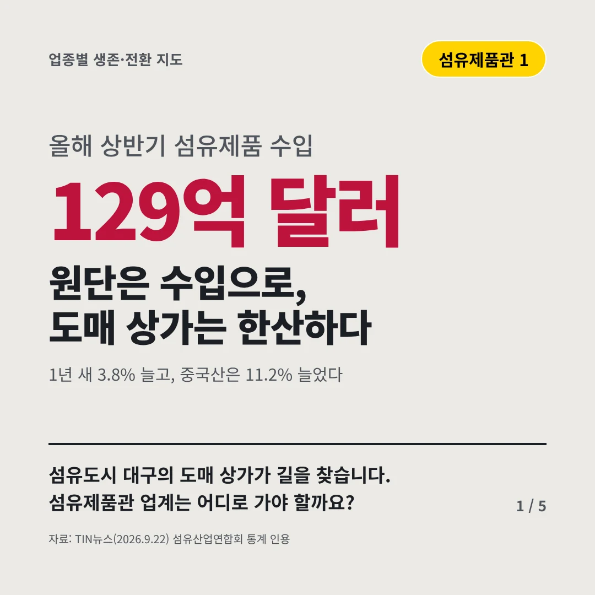
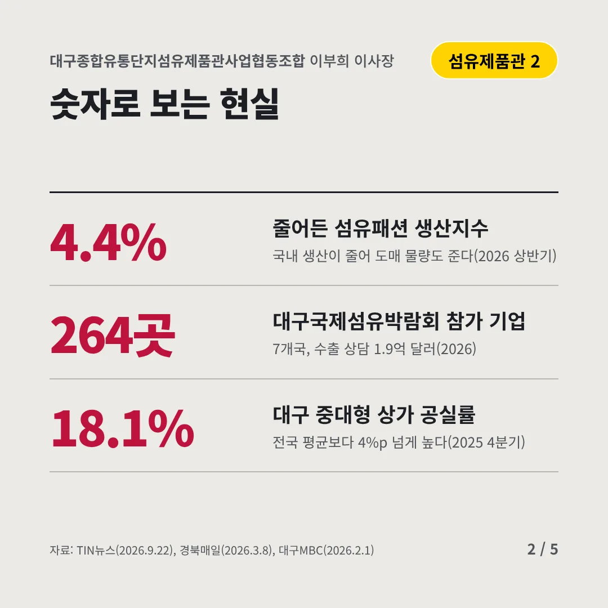
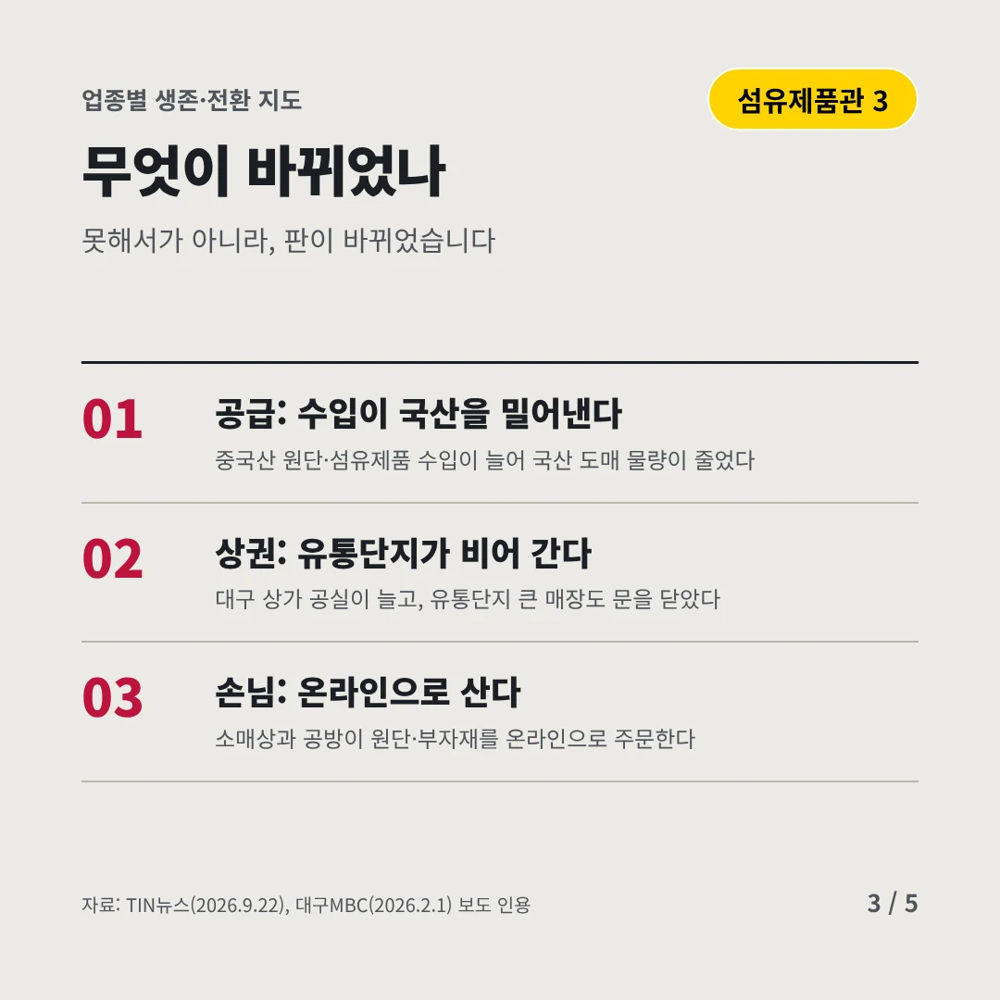
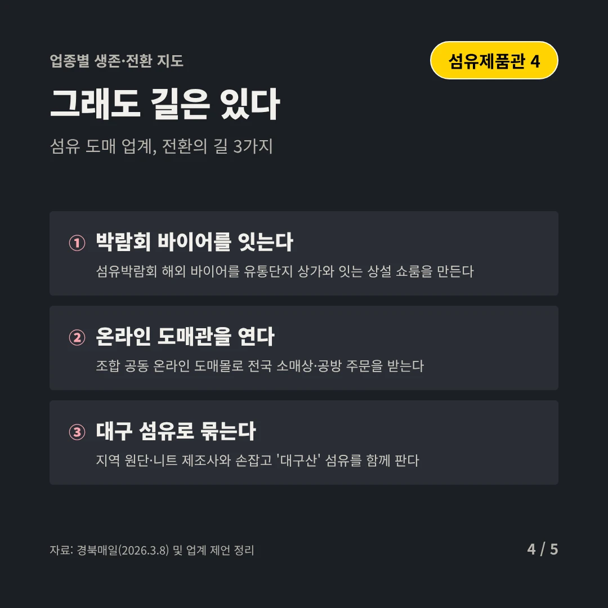
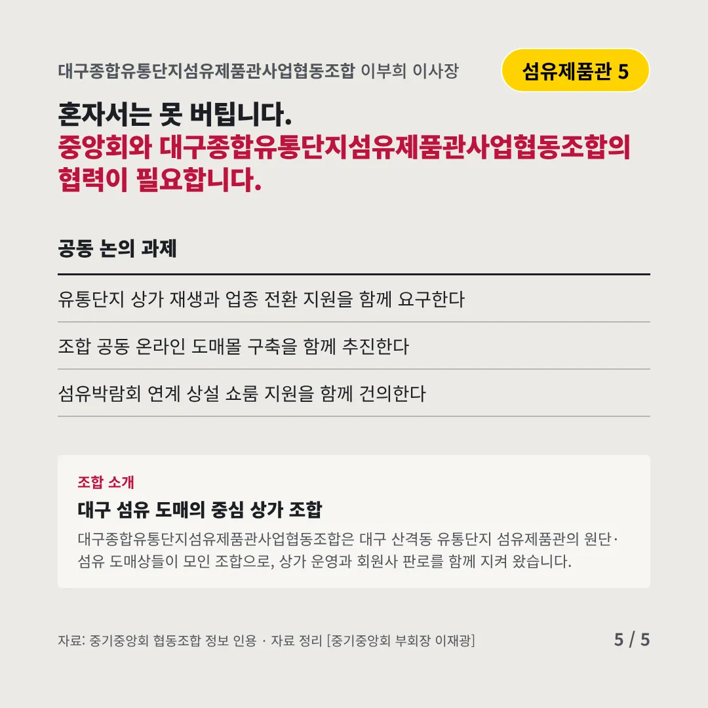
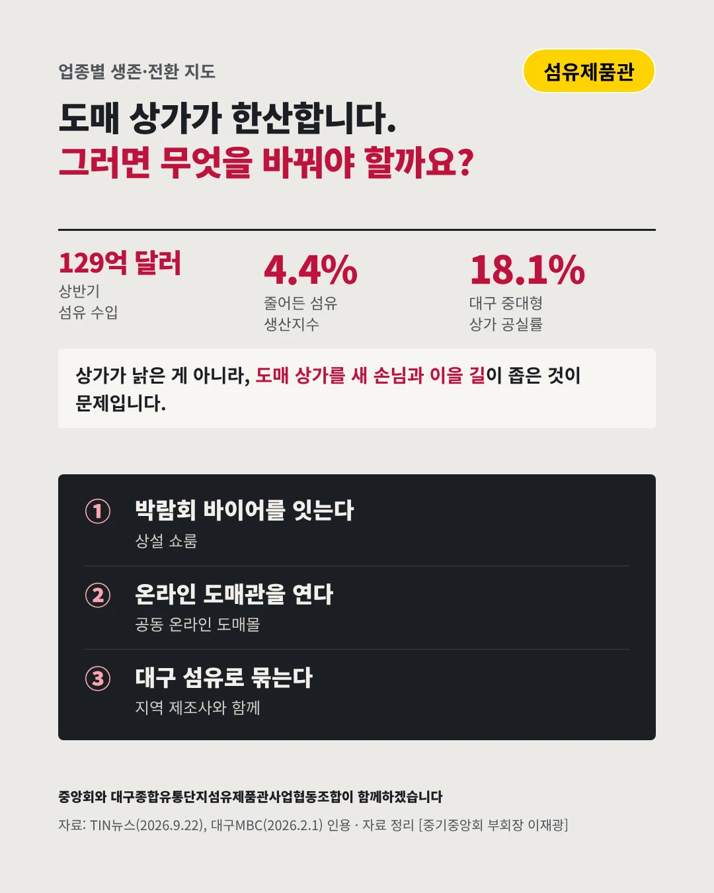

대구종합유통단지섬유제품관사업협동조합
원단은 수입으로, 도매 상가는 한산하다
129억 달러 올해 상반기 섬유제품 수입






섬유도시 대구의 도매 상가가 길을 찾습니다. 섬유제품관 업계는 어디로 가야 할까요?
숫자로 보는 현실
- 4.4%줄어든 섬유패션 생산지수국내 생산이 줄어 도매 물량도 준다(2026 상반기)
- 264곳대구국제섬유박람회 참가 기업7개국, 수출 상담 1.9억 달러(2026)
- 18.1%대구 중대형 상가 공실률전국 평균보다 4%p 넘게 높다(2025 4분기)
무엇이 바뀌었나
- 공급: 수입이 국산을 밀어낸다중국산 원단·섬유제품 수입이 늘어 국산 도매 물량이 줄었다
- 상권: 유통단지가 비어 간다대구 상가 공실이 늘고, 유통단지 큰 매장도 문을 닫았다
- 손님: 온라인으로 산다소매상과 공방이 원단·부자재를 온라인으로 주문한다
그래도 길은 있다
- 박람회 바이어를 잇는다섬유박람회 해외 바이어를 유통단지 상가와 잇는 상설 쇼룸을 만든다
- 온라인 도매관을 연다조합 공동 온라인 도매몰로 전국 소매상·공방 주문을 받는다
- 대구 섬유로 묶는다지역 원단·니트 제조사와 손잡고 '대구산' 섬유를 함께 판다
한 장 요약

조합 소개
대구종합유통단지섬유제품관사업협동조합은 대구 산격동 유통단지 섬유제품관의 원단·섬유 도매상들이 모인 조합으로, 상가 운영과 회원사 판로를 함께 지켜 왔습니다.
자료: TIN뉴스(2026.9.22), 경북매일(2026.3.8), 대구MBC(2026.2.1)